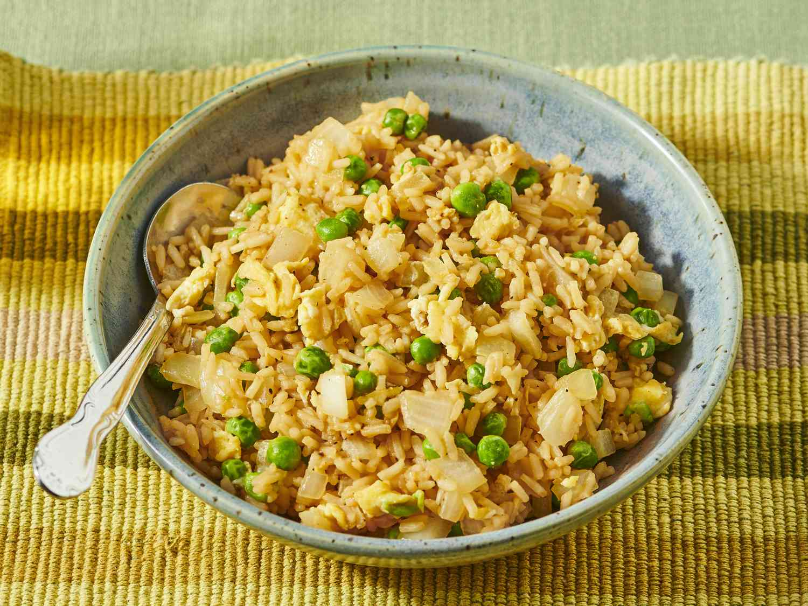

Back to home
Fried Rice

Fried Rice is a versatile, globally beloved dish, popularized in Asian cuisine. Originally from China, it quickly became a worldwide staple due to its ease, adaptability, and ability to transform leftovers into a delicious meal. Classic versions include vegetables, eggs, and optionally, meat or seafood, stir-fried with cooked rice and soy sauce for umami depth.
Ingredients:
- 3 cups cooked, cooled long-grain rice
- 2 tbsp oil (vegetable or sesame)
- 2 eggs, beaten
- 1 cup mixed vegetables (carrot, peas, bell pepper, corn)
- 1/2 cup chopped scallions
- 1 small onion, diced
- 2-3 cloves garlic, minced
- 1 tbsp soy sauce
- 1 tsp oyster sauce (optional)
- 1/2 tsp white pepper
- Salt, to taste
Instructions:
- Heat 1 tbsp oil in a wok. Pour in eggs; scramble until just set, then remove.
- Add more oil. Sauté garlic and onion until fragrant.
- Add vegetables and stir-fry 3-4 minutes.
- Add rice; break up clumps and mix with vegetables.
- Return eggs to the pan, add soy sauce, optional oyster sauce, white pepper, and salt.
- Stir-fry on high heat for 2-3 minutes. Add scallions; toss once more.
- Serve hot as a main or side dish.